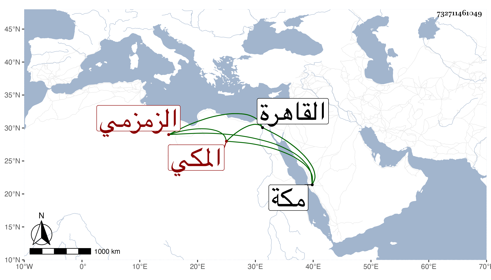

0902Sakhawi.DawLamic.ITO20230111-ara1.EIS1600.732711461049
Biography ID: 732711461049
398
سلامة ابنة عبد العزيز بن عبد السلام الزمزمي المكي الماضي ابوها وجدها وأخوها محمدا تزوجت غير واحد منهم بمكة ابن الاصيبعاتي المهتار وأولدها أبا السعود وفارقها ودخلت القاهرة مع بعض إخوتها لاستخلاص حق ولدها من تركة أبيه ورجعت ولم تلبث أن عادت إلى القاهرة ساعية لاخويها في مباشرة السقاية العباسية فكتب باشتراكهم مع بني إسماعيل الزمزمي وكانت قالات قبل ذلك وبعده .
